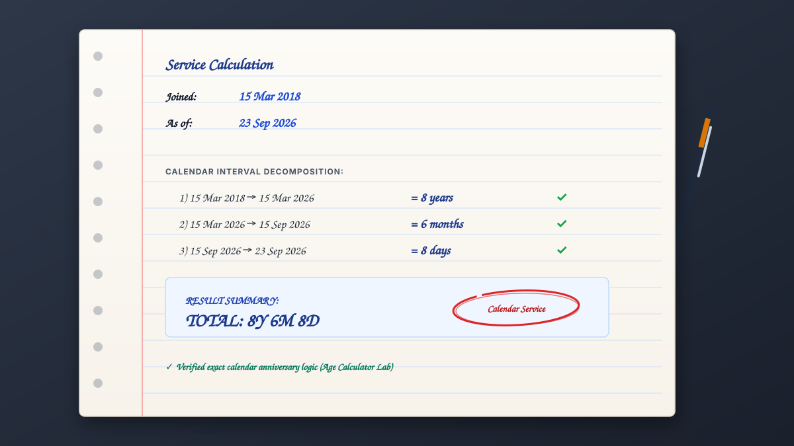
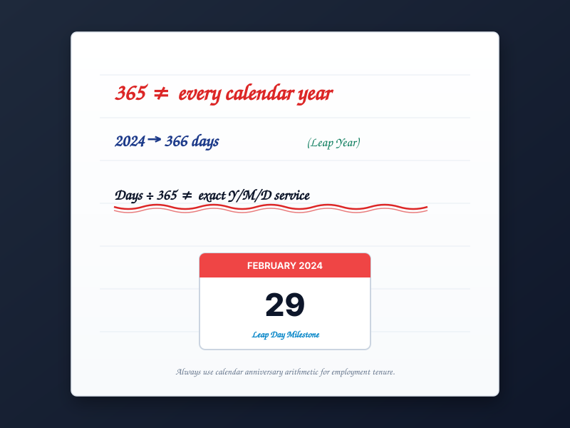
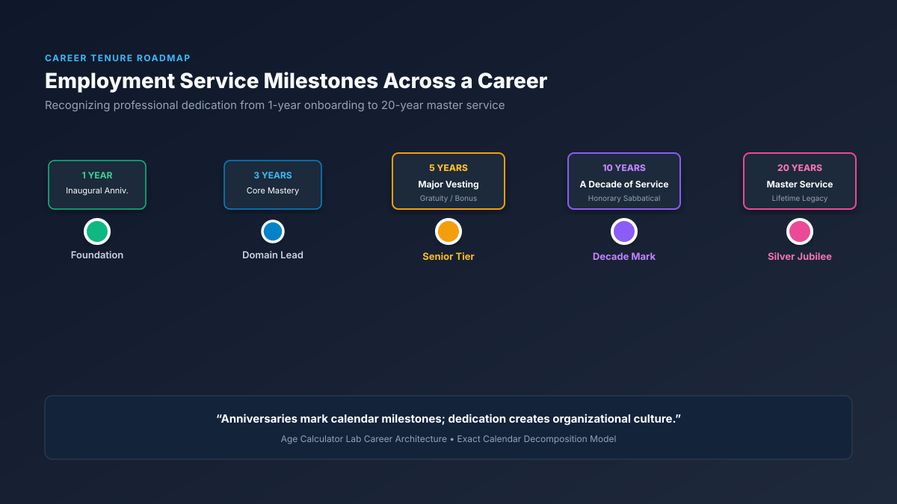

How Do You Calculate Years of Service?
Whether you are evaluating employee tenure for an internal HR review, planning a work anniversary celebration, or writing a resume, follow this structured five-step calculation:
Years of Service Is Not Simply Days ÷ 365
A common shortcut adopted in casual spreadsheets and simplified online tools is to calculate elapsed days between two dates and divide by 365:
While this mathematical formula can provide a rough floating-point decimal approximation, it does not naturally produce accurate calendar years, months, and days.
Why does this shortcut fail for exact employment tenure?
- Months have different lengths: Gregorian calendar months contain 28, 29, 30, or 31 days. A month is never a static 30.00 days.
- Leap years contain 366 days: Every fourth year inserts February 29. Dividing by 365 artificially creates an extra fraction of a year that has not actually elapsed on the calendar.
- Employment anniversaries are calendar dates: If you joined an organization on March 15, your 1st work anniversary occurs on March 15 of the following year—not on Day 365.
Useful only for crude estimation. Drifts out of alignment during leap years and cannot determine exact anniversary days.
Matches the legal dates on employment agreements, awards, corporate seniority rosters, and statutory vesting calendars.
* Note for official records: For formal employment determinations, always follow the applicable employer handbook, contract agreement, or jurisdictional statute.
Example: Calculating 8 Years, 6 Months & 8 Days of Service
Let us examine a real-world calculation to see how Gregorian calendar arithmetic works step by step:
Step 2 (Full Months): March 15, 2026 → September 15, 2026 = 6 Completed Months.
Step 3 (Remaining Days): September 15, 2026 → September 23, 2026 = 8 Remaining Days (\(23 - 15 = 8\)).
You can enter these exact dates into our Years of Service Calculator to verify this result and inspect the countdown to your next milestone automatically.

Interactive Visual: Calendar Decomposition Timeline
Visualizing the calculation as a horizontal and vertical journey clarifies how each component of tenure is locked in:
Mar 15, 2018 (Start Date)
│
├──────────── 8 FULL CALENDAR YEARS ────────────┐
│ │
Mar 15, 2026 │
│ │
├────── 6 REMAINING MONTHS ──────┐ │
│ │ │
Sep 15, 2026 │ │
│ │ │
└────── 8 REMAINING DAYS ────────┘ │
↓
Sep 23, 2026 (Reference Date)
▶ 8 Years, 6 Months, 8 Days
Which Date Should You Use?
A calculation is only as accurate as its anchor dates. Depending on your current career status, you will select one of three reference configurations:
Measures your active tenure to the present minute. Unlocks live anniversary countdowns and real-time progress toward upcoming milestones.
Freezes your finalized tenure for resumes, LinkedIn profiles, background check verification, and severance audits.
Projects your calendar service on a future date, such as a retirement target, vesting cutoff, or contractual review.
How to Find Your Next Work Anniversary
A work anniversary repeats the recognized month and day of your employment start date each year. To determine your next anniversary:
- Identify your hire month and day (e.g., March 15).
- Check if that date has already passed in the current calendar year.
- If it has passed, your next anniversary falls on the same date next year (e.g., March 15, 2027).
- Subtract today's date from the next anniversary date to determine the exact number of days remaining.
Want to track your next anniversary with an active live countdown? Open our Years of Service Calculator.
How Are Years of Service Converted to Decimal Years?
While calendar tenure (\(8 ext{y } 6 ext{m } 8 ext{d}\)) is standard for employee celebrations, financial institutions, actuarial models, and compensation software often require a single decimal number.
To convert total elapsed days to decimal years, divide the elapsed calendar days by 365.2425 (the average length of a Gregorian year factoring in 400-year leap cycles):
Critical Legal Distinction: Decimal years are a mathematical representation. They are not universally interchangeable with calendar anniversaries in legal disputes or corporate benefit thresholds.
How to Calculate Total Months of Service
Certain corporate leave policies, vesting schedules, and probation guidelines express service requirements in months rather than years.
To calculate completed months:
For our worked example: \((8 imes 12) + 6 = 96 + 6 = \mathbf{102 ext{ Completed Months}}\). Including the fractional remaining 8 days yields approximately 102.3 decimal months.
How to Calculate Total Days of Service
Total days measures the continuous elapsed calendar interval between your starting day and reference day. Because it accounts for every 365-day normal year and 366-day leap year, it serves as the foundation for daily benefit accruals and prorating.
If you need to calculate raw days between two independent dates without employment decomposition, check out our Date Difference Calculator.
Do Leap Years Affect Years of Service?
Yes, but in specific ways that depend on the calculation method being applied:
- In calendar calculations: A leap year adds February 29 to the year. For an employee who joined on March 15, 2018, their anniversary still falls on March 15, 2019, 2020, and every year onward. The leap year does not delay their anniversary date.
- In day-count calculations: Because 2020 and 2024 each contained 366 days, the total elapsed days increased by 2 days. A formula dividing total days by 365 would mistakenly report that the employee has reached their anniversary two days early!

What Happens When Employment Starts at the End of a Month?
Starting work on the 28th, 29th, 30th, or 31st of a month introduces well-known calendar boundary conditions:
- Starting on January 31: What date completes one full month of service? February only contains 28 or 29 days. Under standard HR conventions, the first month completes on the final day of February (February 28 or 29).
- Starting on February 29 (Leap Day): In non-leap years, there is no February 29. Most employers celebrate the work anniversary either on February 28 or March 1. Under common calendar subtraction, a full year is recognized once March 1 begins.
Age Calculator Lab handles these edge cases through standardized Gregorian borrow arithmetic, ensuring consistent and predictable results.
Does a Break in Employment Affect Years of Service?
A date calculator measures the unbroken calendar interval between two entered dates. However, in professional life, employees frequently experience career pauses, parental leave, or rehire stints:
[BREAK] (2-Year Career Gap)
2021 ─────────── 2026 (Period 2: 5 Years Employment)
Continuous Service vs. Total Service: When an employee rejoins an organization, employer policy dictates whether prior service is bridged or whether tenure resets to zero for seniority and statutory severance. If your employer credits prior terms, use the "Add another service period" feature in our calculator to aggregate separate stints into a combined total.
Is Years of Service the Same as Qualifying Service?
Short answer: Not necessarily. This is one of the most critical distinctions in employment law and HR administration.
Use this calculator for date-based service measurement. For pension, gratuity, paid leave accrual, vesting, or severance determinations, verify the applicable statutory rules with your HR department or pension administrator.
Legally qualifying service is governed by jurisdictional labor statutes that frequently deduct periods of unauthorized absence, strike action, or extended unpaid leave (Leave Without Pay), and may require working minimums:
- India: Under the Payment of Gratuity Act 1972, an employee must complete at least 240 days of continuous service in a 12-month period to credit a qualifying year toward the 5-year gratuity requirement.
- United States: Under ERISA, a qualified retirement plan typically credits a "Year of Service" only if an employee works at least 1,000 hours in an eligibility computation year.
- United Kingdom: Statutory redundancy pay requires continuous employment under the Employment Rights Act 1996, where certain career breaks reset the statutory clock.
When Do People Calculate Years of Service?
Exact service calculations are used across six primary personal and corporate workflows:
Documenting exact duration for resumes, CVs, LinkedIn experience headers, and personal career journals.
Tracking upcoming anniversary dates and counting down to annual corporate recognition events.
Verifying employee service tiers for annual leave increases, notice period brackets, and internal promotions.
Verifying past employment intervals for background screening, visa petitions, and government security audits.
Identifying employees eligible for 5-year, 10-year, or 20-year corporate recognition awards and sabbaticals.
Projecting calendar tenure up to a planned future retirement cutoff date to estimate career milestones.
Years of Service vs. Years of Experience
While the two phrases sound similar, they represent fundamentally different career metrics:
- Years of Service: Measures the continuous time spent with a single employer or organization.
- Years of Experience: Measures the cumulative professional time accrued across all employers and freelance roles throughout your career.
Common Years-of-Service Milestones
Organizations globally structure employee recognition and benefit upgrades around standard career checkpoints:

- 90 Days & 6 Months: Probationary completion and core onboarding confirmation.
- 1 Year: Inaugural work anniversary and initial compensation review.
- 3 Years: Core tenure mark demonstrating proven domain proficiency.
- 5 Years: Major statutory and retention threshold (gratuity eligibility, 100% 401(k) vesting, senior tenure tier).
- 10 Years: A decade of service honored through honorary sabbaticals, bronze awards, or enhanced pension multipliers.
- 15, 20 & 25 Years: Silver jubilee and master service recognition honoring career loyalty.
Years of Service Calculator FAQs
How do I calculate years of service?
Identify your recognized employment start date and measure the elapsed time to your reference date (such as today or your last working day). Count whole calendar years to your most recent anniversary date, then whole remaining months, and finally remaining days.
How do I calculate years of service from my joining date?
Take your official joining date from your contract or HR record as the start date. For ongoing jobs, compare it against today's date. The calculation decomposes the interval into completed calendar years, remaining months, and remaining days.
How do you calculate employment tenure?
Employment tenure is calculated by measuring continuous calendar time between hire date and evaluation date. Exact tenure calculation preserves annual anniversary dates and accounts for leap years and unequal month lengths.
How do I calculate years, months and days of service?
1) Count complete calendar years between start date and last anniversary. 2) Count remaining whole months up to the reference month. 3) Count remaining days up to the reference day. Combine as Y Years, M Months, D Days.
Is years of service calculated by dividing days by 365?
No. Dividing total elapsed days by 365 yields an approximate decimal number, but it ignores leap years (366 days) and variable month lengths (28 to 31 days). Exact years of service is an anniversary-based calendar calculation.
How do I calculate total months of service?
Multiply completed full years by 12, then add the remaining whole months. For example, 8 years and 6 months equals 102 completed calendar months.
How do I calculate total days of employment?
Count the exact number of calendar days that have elapsed between your start date and reference date, factoring in all intervening 365-day common years and 366-day leap years.
What date should I use as my employment start date?
Use the recognized service start date specified in your official employment contract, offer letter, or HR payroll system. For transferred employees (e.g. under TUPE or mergers), this may be a recognized continuous service date carried forward from a predecessor employer.
What date should I use as my end date?
If currently employed, use today's date. If employment ended, use your official last working day. If planning retirement or a future milestone, use your projected cutoff date.
Does a leap year affect years of service?
A leap year adds February 29 to the calendar year, which increases the total day count by 1 day. However, it does not alter annual anniversary dates for common join dates.
Does a break in employment affect years of service?
Yes. A break in employment interrupts continuous service. Unless your employer has an explicit service-bridging agreement, tenure for statutory benefits typically restarts from the rehire date.
Is years of service the same as work experience?
No. Years of service refers to elapsed tenure with a specific employer or organization. Work experience refers to the cumulative professional time accrued across all jobs and employers throughout your career.
Is years of service the same as qualifying service?
No. Calendar years of service measures elapsed time. Qualifying service is a legal determination defined by labor statutes and pension plans that may deduct unpaid leaves, unauthorized absences, or require minimum working days per year.
How can I calculate my next work anniversary?
Your work anniversary recurs on the same month and day as your hire date each year. Your next anniversary is the earliest upcoming occurrence of that date following today's date.